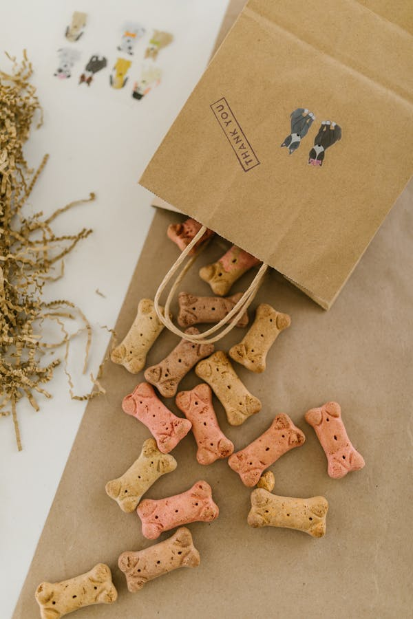

1. Shih Tzu - Istoric Regal
Author: Anita Patru
Date: January 13, 2025
Rasa Shih Tzu, cunoscută și sub numele de „câinele leu,” are o istorie fascinantă ce își are originile în China antică.
Acești câini erau extrem de apreciați la curțile imperiale, fiind considerați simboluri ale norocului și protecției divine.
În ciuda statutului lor de animale de lux, Shih Tzu au fost întotdeauna cunoscuți pentru personalitatea lor afectuoasă și jucăușă.
Astăzi, Shih Tzu rămâne una dintre cele mai iubite rase de câini din lume, adaptându-se perfect vieții moderne, unde oferă iubire necondiționată și aduc bucurie în casele celor care îi îngrijesc.
2. Îngrijirea unui Shih Tzu
Autor: Anita Patru
Data: 15 ianuarie 2025
Blana Shih Tzu necesită periaj zilnic pentru a preveni încâlcirea. Este esențial să ai grijă de ochii și urechile lor pentru a evita problemele de sănătate.
3. Alimentația unui Shih Tzu
Autor: Anita Patru
Data: 17 ianuarie 2025
O dietă bogată în proteine și vitamine este cheia pentru sănătatea acestei rase. Hrana de calitate superioară ajută la menținerea energiei și a blănii strălucitoare.
Porțiile trebuie ajustate în funcție de vârsta, greutatea și nivelul de activitate al câinelui.
Este esențial să le oferi apă proaspătă în mod constant, mai ales că această rasă are tendința să se deshidrateze mai ușor din cauza dimensiunilor reduse.
O dietă corectă, combinată cu o rutină regulată de exerciții fizice, este cheia pentru a menține un Shih Tzu sănătos și fericit.

4. Shih Tzu și copii
Autor: Anita Patru
Data: 19 ianuarie 2025
Shih Tzu este o rasă prietenoasă și se adaptează bine în casele cu copii. Sunt protectivi și iubitori, ceea ce îi face companioni ideali.

5. Shih Tzu în competiții
Autor: Anita Patru
Data: 21 ianuarie 2025
Datorită aspectului lor regal, Shih Tzu sunt adesea vedetele competițiilor canine. Blana lor strălucitoare și mersul grațios îi fac să iasă în evidență.
Dincolo de aspectul lor fizic, Shih Tzu excelează și prin comportamentul lor echilibrat în competiții.
Sunt câini prietenoși, încrezători și bine dispuși, ceea ce îi face să strălucească în ring.
Datorită temperamentului lor calm și adaptabil, se descurcă excelent în fața mulțimii și pot executa comenzile cu grație și precizie.
Juriul îi apreciază nu doar pentru frumusețea lor, ci și pentru modul în care își păstrează demnitatea și farmecul chiar și în cele mai aglomerate momente ale competiți

Participarea lor în competiții este o mărturie a legăturii speciale dintre câine și stăpân, un parteneriat care celebrează frumusețea, disciplina și respectul pentru moștenirea lor istorică.